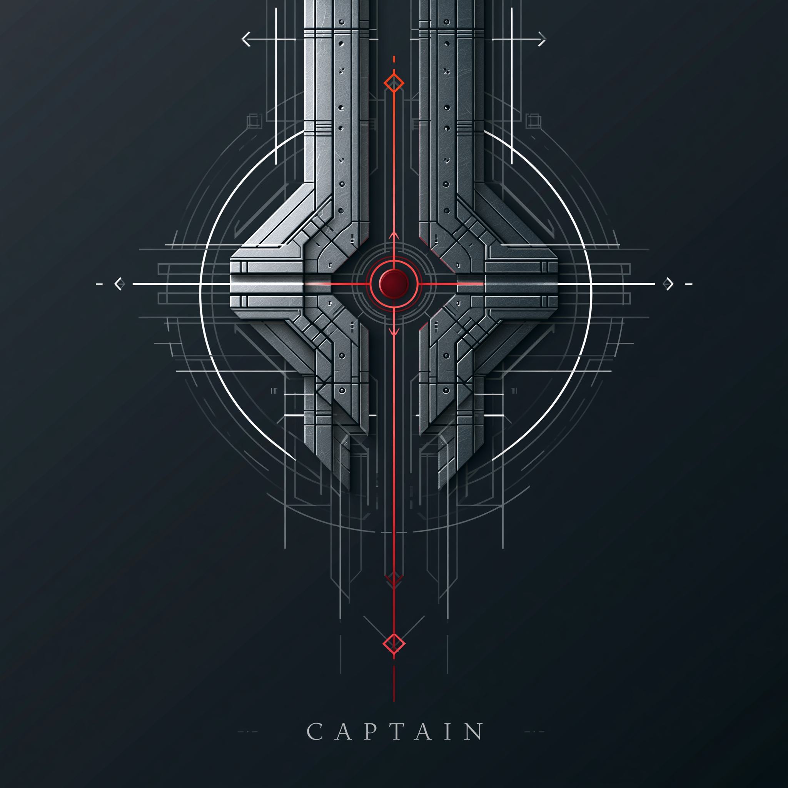

BeaconCore

Clarity Has a Cost.
BeaconCore Reduces It.
Orientation
Most systems make clarity expensive.
BeaconCore makes clarity predictable.
A structural protocol for drift‑free interaction, sealed meaning, and deterministic alignment.
What BeaconCore Reduces
Trust Cost — by stabilising surfaces.
Truth Cost — by sealing meaning.
Decision Cost — by reducing drift.
Why This Matters
Drift increases cognitive load.
Ambiguity increases operational cost.
Unstable meaning increases risk.
BeaconCore removes these burdens by enforcing structural clarity.
Doctrine Intro
Minimal surfaces.
Deterministic alignment.
No ornamentation.
No narrative.
No drift.
Only the architecture required for correct operation.
Sealed Artifacts
Codex
The structural definitions and governing primitives.
Registry
The canonical record of surfaces, roles, and boundaries.
Ledger
The existence record of decisions and architectural motion.
Provenance Plate
The sealed origin, geometry, and authority of the system.
System Directory
The full system directory is located at
StartHere →
Founder’s Statement
BeaconCore is a structural protocol.
Its purpose is to remain still.
Stability is the value. Drift is the cost.